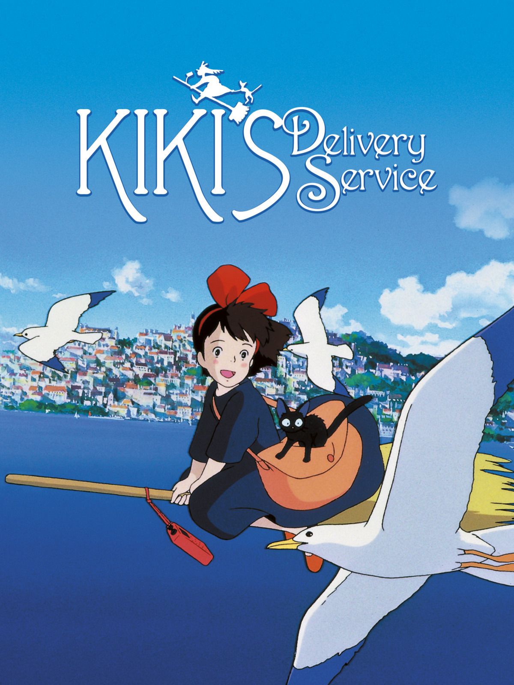

Kiki's Delivery Service - Hayao Miyazaki

Overview & Recap
Kiki's Delivery Service is an adventure anime movie about a young, thirteen year old which, Kiki. She leaves her little village with her black cat Jiji for a year, in accordance to their traditions about training witches. After settling in to her new village, she starts a delivery service on broom, but starts doubting herself when she loses her magical abilities. With the help of the new friends she made, she is able to overcome her self-doubt.
Review
ahhh Kiki's is such a cozy anime. its very light-hearted and fun to watch. Ive rewatched it a bunch of times when by myself and with friends, and it doesnt really get old. the character development is really good and all the characters are lovable (...except for tombo... he annoys me). The plot revolves around Kiki's growth so it is very subtle but well done. The visuals and music are also amazing, as expected from a ghibli film. I think i have some kiki desktop backgrounds saved so yea its a very pretty anime.
Rating
a solid 4/5 its so fun and light-hearted, very good filler to watch between intense animes.